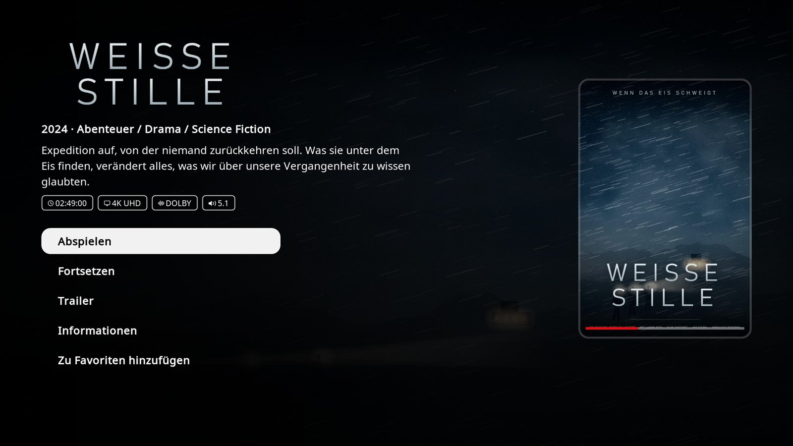
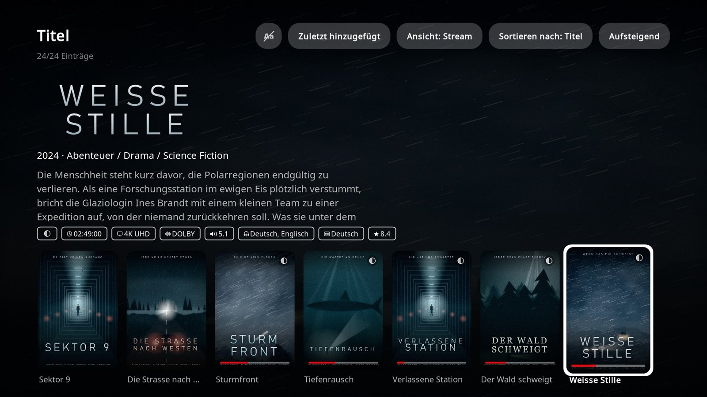
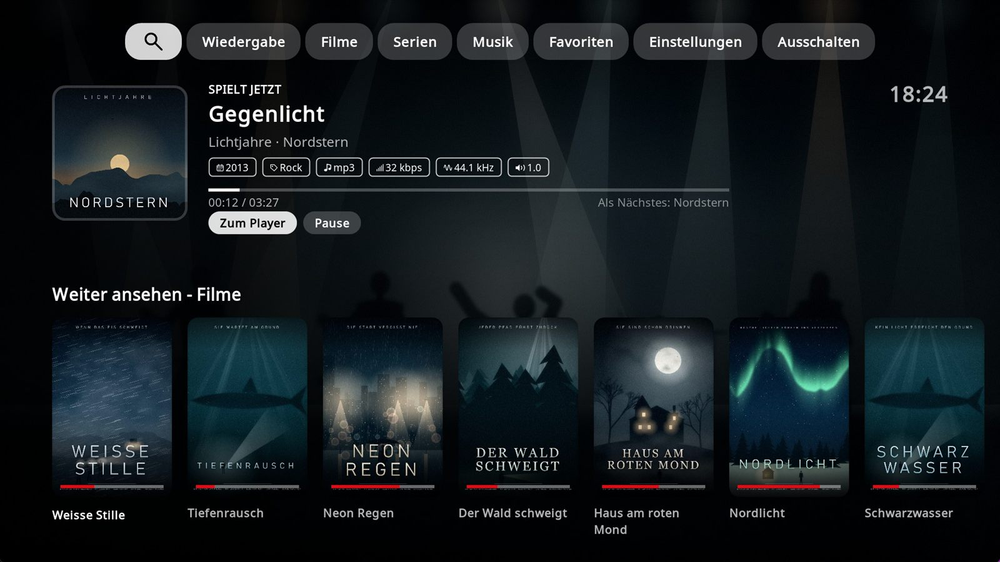

Details, die den Unterschied machen.
Funktionen, die man in einem Skin selten findet – fest eingebaut und im Skin ein- und ausschaltbar.

Stream-Info-Seite
Ein Klick auf einen Film öffnet eine ruhige Info-Seite: Abspielen, Fortsetzen, Trailer, Informationen und Favoriten. Bei Serien geht es direkt zu Staffeln und Folgen. In den Optionen umschaltbar.

Filme als Cover-Reihe
Die Stream-Ansicht zeigt den markierten Titel groß oben – mit Logo, Info-Chips und Handlung – und darunter deine Filme als Reihe aus Covern.

Trailer-Suche
Der Trailer-Button sucht selbst: über TMDb oder per YouTube-Suche. Suchsprache und Ausweichsprache stellst du ein.
Nächste Folge fest eingebaut
Die Up-Next-Funktion gehört zum Skin: sechs Designs, ein einstellbarer Countdown und die Frage „Schaust du noch?“ nach mehreren Folgen in Serie.

Musik auf der Startseite
Läuft Musik, zeigt der Detailbereich der Startseite den aktuellen Titel mit Cover und Fortschritt – dazu Fanart des Interpreten oder Artist-Slideshow im Hintergrund.
NAS-Platten aufwecken
Auf Wunsch weckt Lumen beim Start deine Netzwerklaufwerke im Hintergrund, damit der Film ohne Wartezeit beginnt.